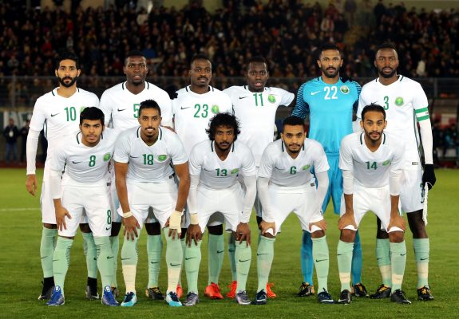

COPAS QUE JÁ PARTICIPOU:
A seleção da Arábia Saudita participou de sua quinta edição da Copa do Mundo de futebol em 2018. As quatro primeiras participações da seleção saudita foram consecutivas (entre 1994 e 2006). A melhor participação da Arábia Saudita foi no Mundial de 1994, quando chegou às oitavas de final. Nas outras participações a seleção saudita parou na Primeira Fase. Na Copa das Nações da Ásia a Arábia Saudita foi campeã em três edições (1984, 1988 e 1996) e três vezes vice-campeã

PREMIAÇÕES QUE JÁ ALCANÇOU
Não obteve títulos em Copa do Mundo.
NOME DO TÉCNICO:
Renard
PRINCIPAIS JOGADORES
Kanno
Al-Dawsari
Otayf
Tabela de jogos
| Data/Hora | Estádio | Adversário |
|---|---|---|
| 22 nov 2022 / 13h00 | Estádio Nacional de Lusail | Argentina |
| 26 nov 2022 / 16h00 | Estádio da Cidade da Educação | Polônia |
| 30 nov 2022 / 22h00 | Estádio Nacional Lusail | México |